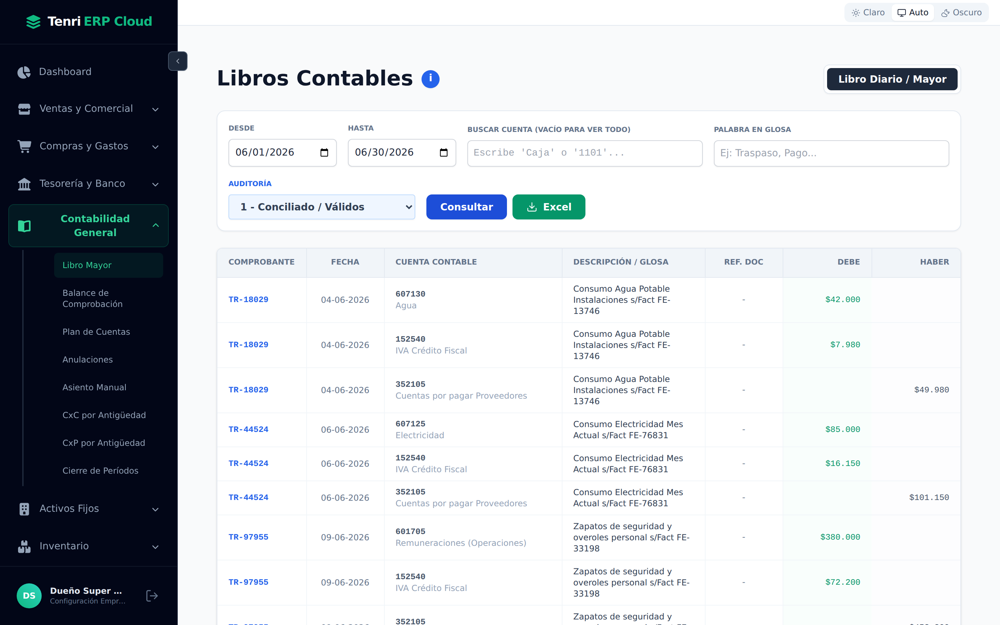
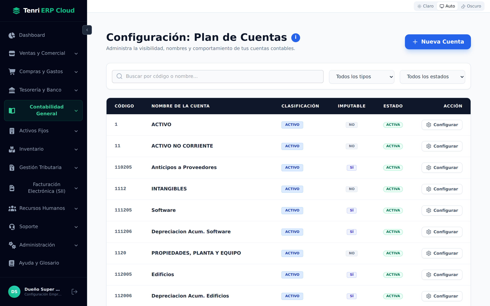
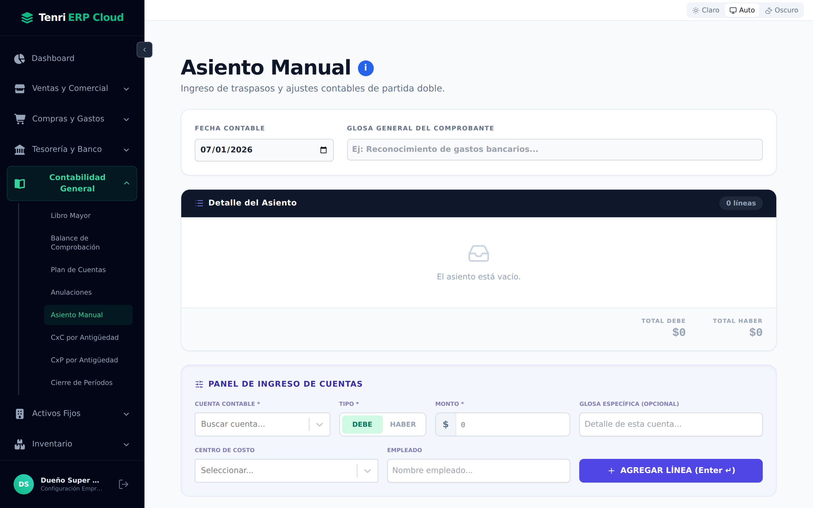
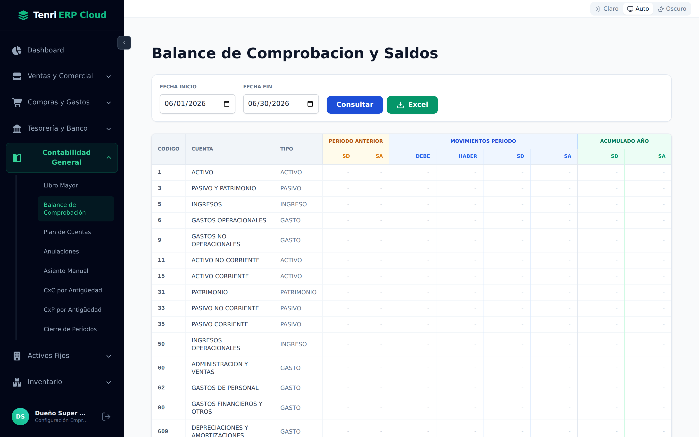
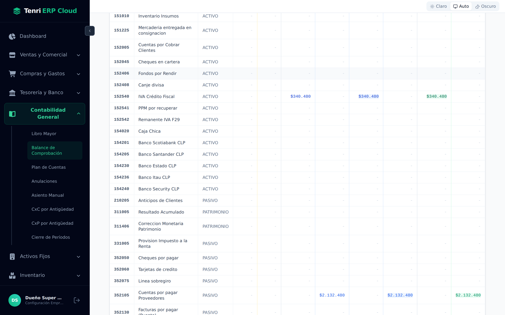
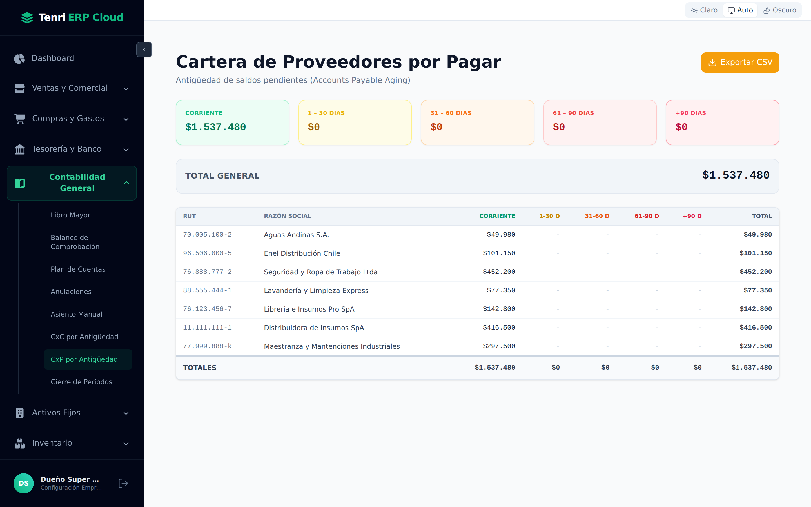
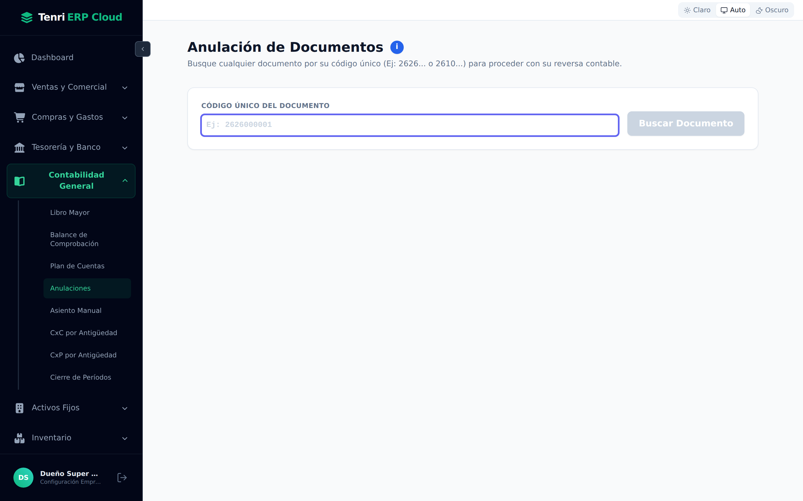
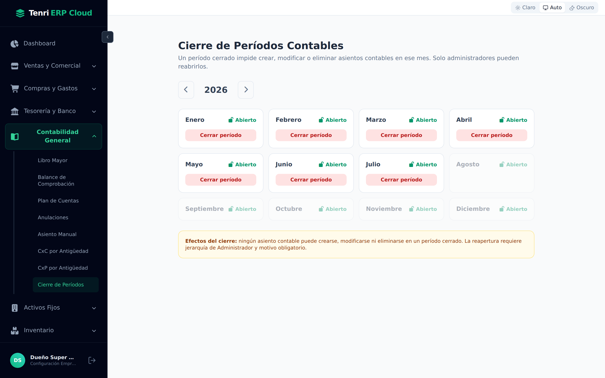

El corazón contable del sistema: el plan de cuentas, los asientos, los libros oficiales, el balance, la antigüedad de saldos y el cierre de cada período.

Ocho pantallas que cubren todo el ciclo contable.
La mayor parte de la contabilidad se genera sola: cada factura de compra o venta y cada pago crean su asiento automáticamente. Este módulo es donde usted consulta, ajusta y cierra esa contabilidad. Al abrir Contabilidad General encontrará:
| Pantalla | Para qué sirve |
|---|---|
| Libro Mayor | Consulta los movimientos contables (Libro Diario y Mayor) en un rango de fechas. |
| Balance de Comprobación | Resumen de saldos de todas las cuentas: debe, haber y saldo por período. |
| Plan de Cuentas | El catálogo de cuentas contables de la empresa. |
| Anulaciones | Reversa contable de un documento ya registrado. |
| Asiento Manual | Traspasos y ajustes de partida doble hechos a mano. |
| CxC / CxP por Antigüedad | Antigüedad de los saldos por cobrar y por pagar. |
| Cierre de Períodos | Bloquea un mes para que su contabilidad no se altere. |
El catálogo sobre el que se apoya toda la contabilidad.
El Plan de Cuentas lista todas las cuentas contables de la empresa. Puede buscar por código o nombre y filtrar por tipo (Activos, Pasivos, Patrimonio, Ingresos, Gastos) y por estado. Cada fila muestra:
| Columna | Significado |
|---|---|
| Código | El número de la cuenta. Los códigos cortos (1, 11, 1120) son grupos; los largos (112005) son cuentas de detalle. |
| Nombre / Clasificación | El nombre de la cuenta y su naturaleza (Activo, Pasivo, etc.). |
| Imputable | Sí significa que acepta movimientos directos; No es una cuenta de agrupación que solo suma a sus hijas. |
| Estado | Si la cuenta está Activa y disponible para usarse. |
Con + Nueva Cuenta agrega una cuenta y con Configurar edita su nombre, comportamiento o visibilidad.

Para traspasos y ajustes que no genera ningún otro módulo.
Un asiento manual se usa para registrar hechos contables que no vienen de una factura o un pago (provisiones, correcciones, reclasificaciones). Funciona con partida doble: el total del Debe siempre debe igualar al total del Haber.
Complete primero la cabecera:
Luego, en el Panel de Ingreso de Cuentas, agregue línea por línea:
| Campo | Descripción |
|---|---|
| Cuenta Contable | Busque y elija la cuenta imputable. |
| Tipo | Si la línea va al Debe o al Haber. |
| Monto | El valor de la línea. |
| Glosa Específica | Opcional: detalle particular de esa cuenta. |
| Centro de Costo / Empleado | Opcional: para analizar el gasto por área o persona. |
Presione Agregar Línea (o Enter). El sistema totaliza el Debe y el Haber en vivo y no le permitirá guardar mientras no estén cuadrados.

La consulta oficial de todos los movimientos contables.
En Libros Contables consulta el detalle de los asientos. Configure la búsqueda con:
| Filtro | Uso |
|---|---|
| Desde / Hasta | El rango de fechas a consultar. |
| Buscar Cuenta | Escriba un código o nombre (“Caja”, “1101”) para ver una sola cuenta; déjelo vacío para ver todo. |
| Palabra en Glosa | Filtra por texto de la descripción (ej.: “Traspaso”, “Pago”). |
| Auditoría | Acota a asientos conciliados/válidos u otros estados. |
Presione Consultar. El resultado muestra, por cada línea: comprobante, fecha, cuenta, glosa, referencia y montos al Debe y al Haber. Con Excel exporta lo consultado y con Libro Diario / Mayor alterna la forma de presentación.
El resumen que demuestra que la contabilidad cuadra.
Elija Fecha Inicio y Fecha Fin y presione Consultar. El balance lista todas las cuentas con sus saldos agrupados en tres bloques:
| Bloque | Qué contiene |
|---|---|
| Período Anterior | El saldo con que venía cada cuenta antes del rango (SD = saldo deudor, SA = saldo acreedor). |
| Movimientos del Período | El Debe y el Haber del rango consultado y el saldo resultante. |
| Acumulado Año | El saldo acumulado en el ejercicio. |

Las cuentas de agrupación aparecen en cero; los saldos reales están en las cuentas de detalle. En este ejemplo, el IVA Crédito Fiscal y las Cuentas por Pagar Proveedores muestran los movimientos del mes:

Cuánto le deben y cuánto debe, ordenado por antigüedad.
Hay dos pantallas gemelas: CxC por Antigüedad (lo que le deben sus clientes) y CxP por Antigüedad (lo que usted debe a sus proveedores). Ambas clasifican cada saldo pendiente en cinco tramos según cuánto lleva sin pagarse:
| Tramo | Interpretación |
|---|---|
| Corriente | Aún dentro del plazo (no vencido). |
| 1 – 30 días | Vencido hace poco; conviene gestionarlo. |
| 31 – 60 / 61 – 90 días | Mora media; requiere seguimiento. |
| +90 días | Deuda antigua; riesgo alto. |
Arriba se resumen los totales por tramo y el Total General; abajo, el detalle por entidad. Con Exportar CSV lleva el reporte a una planilla.

Reversar un documento sin borrar el historial.
Cuando un documento se registró por error, no se elimina: se reversa. En Anulación de Documentos, escriba el código único del documento y presione Buscar Documento. El sistema le mostrará el detalle y, al confirmar, generará el asiento inverso que deja la contabilidad en su estado anterior, con la trazabilidad de quién anuló y por qué.

Blindar los meses ya terminados.
Una vez revisado y cuadrado un mes, se cierra para que nadie pueda alterarlo. La pantalla muestra los doce meses del año con su estado Abierto o Cerrado. Presione Cerrar período en el mes que corresponda; use las flechas ‹ › para cambiar de año.

Recuerde: no necesita hacer asientos a mano para lo cotidiano. Al registrar compras, ventas y pagos, Tenri ERP Cloud genera los asientos por usted. Este módulo existe para consultar, ajustar y controlar esa contabilidad, no para escribirla línea a línea.
Contabilidad General reúne el catálogo de cuentas, los libros oficiales, el balance, la antigüedad de saldos y el control de cierres en un solo lugar.
Plan de cuentas y asientos manuales de partida doble cuando hace falta.
Consulta el mayor, exporta a Excel y verifica que todo cuadre.
Antigüedad de saldos, anulaciones con trazabilidad y cierre de períodos.